Ejercicio 2 -
Tunelación por SSH de la visualización remota
La situación planteada en el Ejercicio 1 ilustra
cómo podemos conectarnos a un escritorio remoto, ofrecido
por una máquina virtual, cuando la configuración
de red permite acceder a esa máquina virtual directamente
desde el ordenador donde ejecutamos la aplicación cliente de
visualización.
Sin embargo, es frecuente que, debido a la presencia de cortafuegos
intermedios, no sea posible realizar directamente esta
conexión. Un ejemplo de ésto sería el
siguiente escenario: la máquina virtual que ofrece el
escritorio remoto está corriendo en un servidor de
virtualización (p.e, un hipervisor ESXi) dentro de un CPD
(Centro de Proceso de Datos), mientras el equipo donde trabaja el
usuario está ubicado fuera del CPD, y sólo puede
alcanzarlo conectándose a través de Internet,
usando una dirección dinámica (asignada por
DHCP), que no podemos conocer a priori. Obviamente el cortafuegos del
CPD va a proteger la máquina que ofrece el escritorio remoto
rechazando cualquier conexión no autorizada procedente de
Internet, pero como no podemos conocer a priori la dirección
IP del ordenador desde el que procederán las conexiones
autorizadas, no podemos configurarlo para permitir directamente el
acceso RDP o VNC.
En el Ejercicio 1, al practicar el acceso VNC al escritorio Linux,
hemos visto un problema adicional: mientras que la conexión
RDP estaba nativamente encriptada, la conexión VNC no usa
por defecto encriptación, lo que obviamente haría
vulnerable ese tráfico de red si tiene que pasar por
Internet.
Es sencillo, sin embargo, solucionar ambos problemas utilizando la
tunelización (port
forwarding) del protocolo RDP, o del protocolo VNC, a
través de una conexión encriptada SSH.
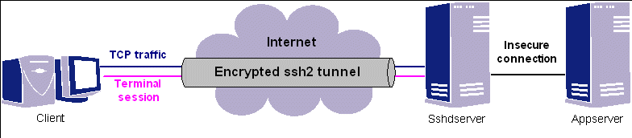
La figura muestra el concepto básico de la
tunelización SSH; en ella, tenemos un ordenador cliente
desde el que queremos acceder a un servicio de red (en ese caso, el
escritorio remoto) ofrecido por el servidor Appserver, pero no
es posible establecer conexión directamente entre el
ordenador cliente y Appserver.
La solución es usar una conexión intemediaria
entre una aplicación cliente SSH (que corre en el ordenador Client) y un
servidor SSH (que corre en Sshdserver).
Esta conexión encriptada SSH podrá transportar
entonces, como carga útil, el tráfico que
intercambiarán el cliente de visualización y el
servidor Appserver;
lo único que necesitaremos será especificar, a la
hora de establecer la conexión ssh entre Client y Sshdserver, que el
tráfico correspondiente al puerto TCP usado por la
aplicación de visualización deberá ser
redireccionado por Sshdserver
al servidor Appserver.
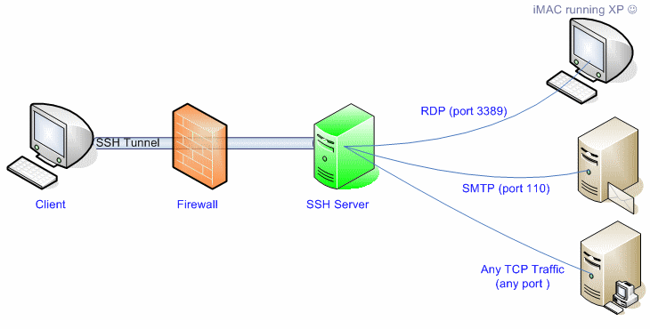
Una ventaja del uso de un túnel SSH es que, como muestra la
figura, es posible tener simultaneamente activos varios
túneles distintos, con distintas máquinas
destino, y redireccionando varios protocolos distintos.
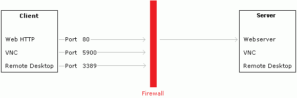
En el caso que nos interesa (el acceso a escritorios remotos en
máquinas virtuales), los protocolos que necesitaremos
tunelizar son RDP (Remote Desktop) y VNC. Como muestra la figura, los
puertos empleados por defecto en estos protocolos son el 3389 (RDP) y
el 5900 (VNC).
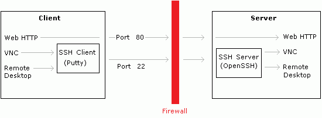
Como muestra la figura, en este ejercicio, para tunelizarlos, usaremos
en el lado del cliente de visualización una
aplicación cliente SSH llamada Putty, mientras que
en el lado del servidor utilizaremos el servidor SSH de una
máquina virtual Debian 7.
Para realizar el ejercicio, seguimos estos pasos:
1) Primero,
vamos a arrancar la máquina virtual que ofrecerá
el escritorio remoto usando RDP. Para ello, vamos al directorio D:\practicas\MV\XP_RDP,
hacemos doble click sobre XP_RDP.vmx
para abrirla en Workstation, la arrancamos con Power On, y hacemos
login en ella como usuario pablo
con el password habitual.
2)
Análogamente, vamos a arrancar la máquina virtual
Linux que ofrecerá su escritorio remoto usando VNC. Para
ello ir al directorio D:\practicas\MV\Debian7-1,
abrir Debian7-1.vmx,
arrancar la máquina y hacer login como usuario Curso FP.
Ahora, arrancaremos (y comprobaremos la configuración de) la
máquina Debian 7 que va a proporcionar el servidor SSH a
través del cual haremos la tunelación.
3) Ir al
directorio D:\practicas\MV\DebianSSH,
abrir DebianSSH.vmx
y arrancar la máquina virtual.
4) Hacer
login en DebianSSH
como usuario root.
Ejecutar ifconfig
para comprobar la dirección IP de este servidor (que
será la 10.0.0.30).
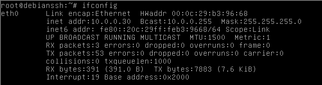
5) Comprobar
que el servidor DebianSSH
ve por red a las dos máquinas virtuales que ofrecen
escritorios remotos. Para ello, ejecutar ping 10.0.0.25 (la
dirección IP estática de XP_RDP),
y ping
10.0.0.26 (la IP estática de Debian7-1).
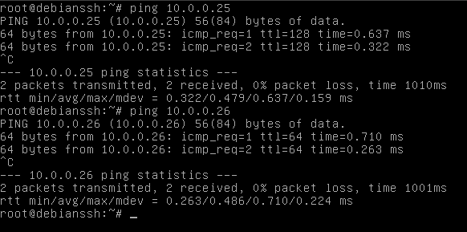
6)
Comprobamos que el servidor SSH esté arrancado. Para ello,
ejecutamos netstat -an |
more.
Como vemos, el servicio ssh (puerto 22) está escuchando en
0.0.0.0 (es decir, acepta conexiones desde cualquier dirección
IP).
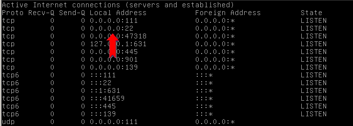
7) Ahora abrimos la aplicación cliente putty.exe (cuyo acceso directo está en el escritorio), y establecemos una conexión SSH con el servidor debianssh, tunelizando los puertos 3389 y 5900, de la forma mostrada en esta animación. En el terminal que mostrará putty, hacer login como usuario root.
8) Una vez establecida la conexión SSH, usar Inicio -> Ejecutar -> mstsc para ejecutar la aplicación cliente de Microsoft Terminal Services, y dar como dirección destino localhost:33900
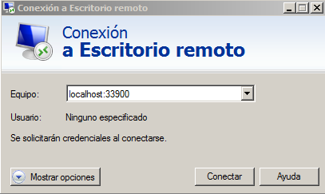
9) Como nos estamos conectando
a un Windows XP (que usa una encriptación más antigua que
la del Windows 7), aparecerá un aviso. Confirmar que queremos
conectarnos.
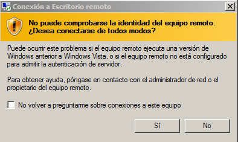
10) Se abrirá entonces el escritorio remoto. Autentificarse como usuario pablo; a partir de este punto, el uso del escritorio remoto es igual al que hemos hecho en el ejercicio 1.
11) Cerrar el escritorio remoto Windows.
12) Ahora abriremos la conexión vía VNC al escritorio remoto del Debian 7. Abrir el cliente VNC-Viewer (cuyo acceso directo está en el escritorio), y dar como dirección de destino localhost.
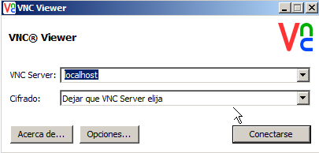
13) Al establecer la
conexión con el servidor Debian, a través del
túnel SSH, aparecerá un aviso indicando que la
conexión no está cifrada. Confirmar que queremos
establecer la conexión.
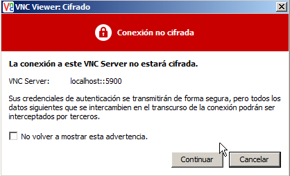
14) En la máquina Debian
el servidor de VNC, con la configuración actual de
compartición del escritorio, requiere que demos permiso
explícito para que se establezca la conexión. Aceptar su
establecimiento.
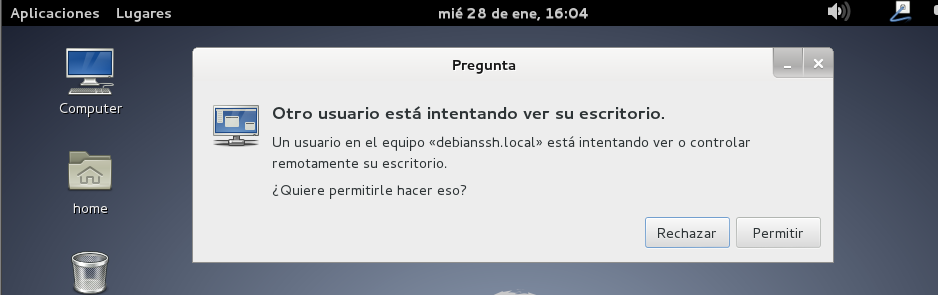
15) En el cliente VNC
aparecerá entonces la representación remota del
escritorio del Debian 7. A partir de aquí la operación es
idéntica a la que ya hemos visto en el ejercicio 1.
16) Para finalizar el ejercicio, cerramos el escritorio remoto VNC, y apagamos las máquinas XP_RDP, Debian7-1, tras lo que cerramos el cliente putty haciendo exit en la terminal SSH y después cerramos DebianSSH con telinit 0.